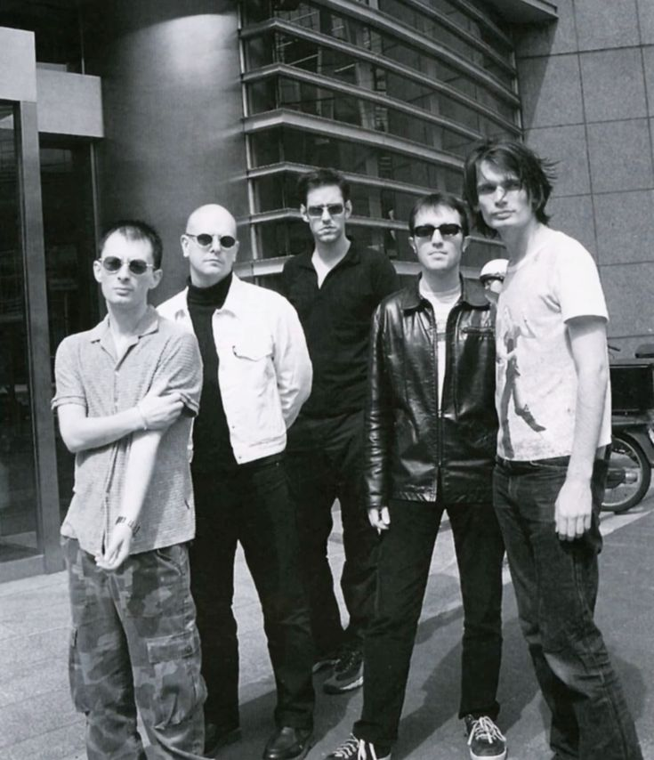
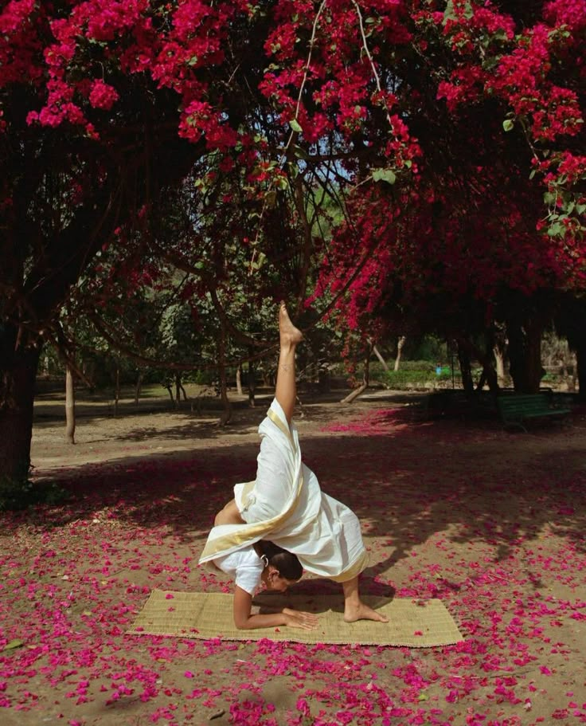

Hannah Kizilbash
Hannah Kizilbash is a 19 year old woman who feeds her passions daily. She likes getting really engrossed in a project and continuing it to completion. She spends her time thinking about how to show the world her soul in a way that is not spoken, but shown through art.
Recent thoughts
I have started to understand yoga. I used to see it as a competition with myself, where i would feel the need to be the stretchiest in the class, always doing the hardest pose but now I see it differently. I have seen it as an opportunity to try and let go of my insecurities, they often say, "Yoga class really starts the minute you leave the studio". So, I am pleased to say that I have finally started yoga!
------
Recent Favorites

Radiohead Portishead
Portishead

Yoga Björk
Björk
News
Contact
Email: Hannahkizilbash@gmail.com
Phone Number: 773-786-7800Linkedin: Hannah Kizilbash